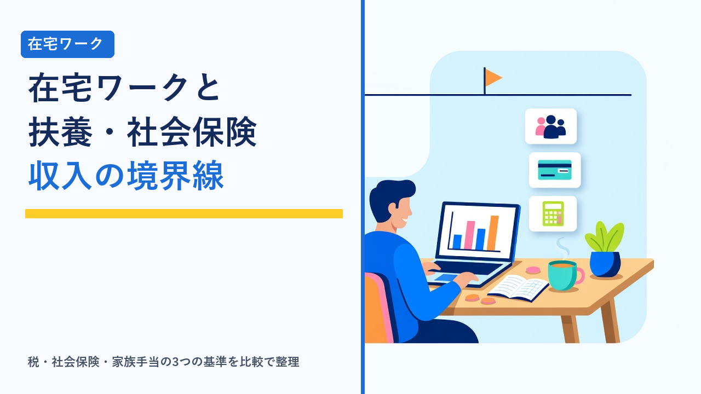

在宅ワークと扶養・社会保険：主婦・副業会社員が気をつけたい収入の境界線
2026-10-15 更新

配偶者や親の扶養に入ったまま在宅ワークを始めた人や、会社員として働きながら副業で在宅案件を受けている人が、収入が増えてきたときに必ず気になるのが「いくらまでなら扶養のままでいられるのか」「どこから社会保険や税金の扱いが変わるのか」という境界線です。パート勤務の「年収の壁」として語られる数字は広く知られていますが、クラウドソーシングなどの在宅ワークは報酬が「給与」ではないため、同じ金額を受け取っても判定のしかたが変わります。この記事では、在宅ワークに関わる3種類の「扶養」の境界線と、副業会社員が押さえておきたい申告のルールを、客観的に整理します。
※この記事で挙げる金額は、2025年分（令和7年分）以降に適用される税制改正の内容と、公的医療保険の一般的な被扶養者認定の基準をもとにした目安です。制度は年度ごとに見直されるため、実際の判断にあたっては国税庁・日本年金機構・加入している健康保険の保険者の最新情報をご確認ください。
「扶養」の境界線は3種類ある
一口に「扶養」と言っても、実際には別々の制度が同じ言葉で呼ばれています。在宅ワークの収入に関係するのは、主に次の3つです。
| 種類 | 何が決まるか | 判定の基準になるもの | 判定するのは誰か |
|---|---|---|---|
| 税法上の扶養 | 配偶者控除・配偶者特別控除・扶養控除を、家族（扶養する側）が受けられるか | 扶養される人の「合計所得金額」（収入から経費や控除を引いた額） | 税務署（確定申告や年末調整で判定） |
| 社会保険の扶養 | 家族の健康保険の被扶養者・国民年金の第3号被保険者でいられるか | 扶養される人の「今後1年間の収入見込み」 | 加入している健康保険の保険者（協会けんぽ・健康保険組合など） |
| 会社の家族手当 | 家族（扶養する側）の勤務先から家族手当・扶養手当が支給されるか | 会社ごとの就業規則・賃金規程で定める収入基準 | 家族の勤務先 |
この3つは基準となる金額も、収入の数え方も、判定する主体も異なります。税法上の扶養から外れても社会保険の扶養には残れる、あるいはその逆、ということが普通に起こるため、「扶養の範囲内で働きたい」と考えるときは、どの扶養のことを指しているのかを最初に区別しておく必要があります。
在宅ワークの報酬は「給与」ではない：所得の計算が変わる
パート・アルバイトの収入は「給与所得」で、収入から一定額の給与所得控除を自動的に差し引いた額が所得になります。一方、クラウドソーシングの案件や企業からの業務委託で受け取る報酬は、一般に「事業所得」または「雑所得」に区分され、給与所得控除は使えません。代わりに、収入から実際にかかった必要経費を差し引いた額が所得になります。
| 項目 | パート・アルバイト（給与） | 在宅ワーク・業務委託（事業所得・雑所得） |
|---|---|---|
| 所得の計算 | 給与収入 − 給与所得控除（最低65万円） | 報酬の合計 − 必要経費 |
| 経費の扱い | 原則として個別の経費は計上しない | 通信費・パソコン・ソフト代・書籍代など、業務に使った分を計上できる |
| 「年収◯万円の壁」の数字 | 給与収入ベースで語られることが多い | そのままは当てはまらず、所得ベースに読み替える必要がある |
| 源泉徴収 | 勤務先が行う | 発注者によって行われる場合と行われない場合がある |
| 確定申告 | 勤務先の年末調整で完結することが多い | 基準を超えたら自分で行う |
この違いが意味するのは、パート向けの「年収103万円」「年収123万円」といった数字を、在宅ワークの報酬額にそのまま当てはめると判断を誤るということです。たとえば報酬が年間100万円でも、経費が10万円なら所得は90万円、経費がほとんどなければ所得はほぼ100万円になります。在宅ワークでは「報酬額」ではなく「所得額」で境界線を見る、というのが大前提です。所得区分や経費の基本は在宅ワークで注意したいこと（契約・報酬・確定申告の基礎知識まとめ）で整理しています。
税法上の扶養の境界線（2025年分以降）
2025年分から適用されている税制改正で、扶養に関わる所得の基準が引き上げられました。在宅ワークの所得（報酬 − 経費）で見た場合の境界線は、おおむね次のとおりです。
| 制度 | 扶養される人の合計所得金額の基準 | 在宅ワーク所得での見方 |
|---|---|---|
| 配偶者控除（配偶者の扶養に入る場合） | 58万円以下 | 報酬 − 経費が58万円以下なら、配偶者が満額の控除を受けられる |
| 配偶者特別控除 | 58万円超〜133万円以下（95万円以下なら控除額は満額） | 58万円を超えてもすぐにゼロにはならず、所得が増えるにつれて段階的に控除額が減る |
| 扶養控除（親の扶養に入る場合） | 58万円以下 | 58万円を超えると親は扶養控除を受けられなくなる（19〜22歳は別途、特定親族特別控除の仕組みあり） |
| 本人の所得税 | 基礎控除（合計所得132万円以下の場合95万円）など所得控除の合計を超えると課税 | 所得95万円以下なら、他の控除がなくても所得税はかからない目安 |
| 本人の住民税 | 自治体ごとの非課税限度額を超えると課税（所得税より低い水準） | 所得税がかからなくても住民税は発生することがある |
※扶養する側（配偶者や親）の所得が一定額を超えると配偶者控除・配偶者特別控除は適用されません。また、配偶者特別控除の控除額は扶養する側の所得によっても変わります。住民税の非課税限度額は自治体や扶養家族の有無で異なります。
ポイントは、配偶者の扶養の場合は58万円を1円超えた瞬間に大きな負担が生じるわけではないという点です。配偶者特別控除によって、所得95万円までは配偶者側の控除額は変わらず、その先も段階的に減っていきます。一方、親の扶養に入っている場合は扶養控除に段階的な仕組みがないため（19〜22歳を除く）、58万円の境界線の影響が相対的に大きくなります。
社会保険の扶養の境界線：130万円と「経費」の扱い
家族の健康保険の被扶養者（配偶者の場合はあわせて国民年金の第3号被保険者）でいられるかどうかは、一般に年収130万円未満（60歳以上または一定の障害がある人は180万円未満、19歳以上23歳未満の被扶養者は150万円未満）で、かつ扶養する人の収入の2分の1未満であることが基準とされています。ここでいう年収は過去の実績ではなく「今後1年間の収入見込み」で、月額に直すとおおむね10万8千円程度が目安になります。
在宅ワークの場合に注意が必要なのは、この130万円を「報酬額」で見るのか「経費を引いた額」で見るのかが、保険者によって異なる点です。
- 協会けんぽの場合：自営業的な収入については、収入から必要経費を差し引いた額で判定するのが基本です。ただし、税務上の経費がすべて認められるわけではなく、その収入を得るために直接必要な経費（材料費・仕入れなど）に限られる扱いが一般的です。
- 健康保険組合の場合：組合ごとに独自の認定基準を持っており、経費の控除を税務上より狭く認める組合や、認めない組合もあります。
- 共通する点：継続して月額の目安を超える収入がある状態になると、年の途中でも被扶養者の資格を失う扱いになるのが一般的です。年末に合計して判断する税法上の扶養とは、時間の数え方も違います。
なお、パート向けに語られる「106万円の壁」（一定規模の勤務先で、週20時間以上などの条件を満たすと勤務先の社会保険に加入する仕組み）は、雇用契約で働く人のための制度です。業務委託で在宅ワークをしている人は、発注者の社会保険に加入することはないため、この基準は関係ありません。在宅ワーカーが見るべき社会保険の境界線は、基本的に130万円の被扶養者基準だけです。この106万円の基準は近年段階的に見直しが進められているため、パートと在宅ワークを掛け持ちしている人は、勤務先側の条件もあわせて確認しておくと安心です。
副業会社員が気をつけたい3つのルール
会社員が副業として在宅ワークをする場合は、扶養の問題ではなく、申告と社会保険の扱いが論点になります。
1. 所得税の「20万円ルール」
給与を1か所から受けていて年末調整を受けている会社員は、副業の所得（報酬 − 経費）が年間20万円以下であれば、所得税の確定申告は不要とされています。ただし、医療費控除やふるさと納税の寄附金控除などで確定申告をする場合は、20万円以下でも副業の所得を含めて申告する必要があります。立場別の目安は在宅ワークの確定申告、いくらから必要？年間所得別の目安まとめで整理しています。
2. 住民税には「20万円ルール」がない
見落とされやすいのが住民税です。20万円ルールは所得税だけのもので、住民税には同様の例外がありません。副業の所得が20万円以下で確定申告をしない場合でも、お住まいの市区町村への住民税の申告は必要です。確定申告をする場合は、その内容が自治体に共有されるため別途の申告は不要です。なお、副業分の住民税を給与からの天引きではなく自分で納める「普通徴収」を選べるかどうかは、自治体の運用や所得の種類によって異なります。
3. 社会保険への影響と就業規則
副業が業務委託であれば、本業の勤務先の社会保険にそのまま加入し続けることになり、副業の報酬額によって保険料が変わることはありません。一方、副業先と雇用契約を結んで働く場合は、副業先でも加入条件を満たすと両方の勤務先で社会保険の手続きが必要になることがあります。また、副業そのものを就業規則で制限・届出制にしている会社は多いため、収入の境界線を考える前に勤務先のルールを確認しておくことが先決です。
境界線を超えたらどうなるか
それぞれの境界線を超えたときに、具体的に何が変わるのかを整理すると次のようになります。
| 超えた境界線 | 変わること | 負担の大きさの目安 |
|---|---|---|
| 税法上の扶養（所得58万円） | 配偶者・親の控除が減る、または受けられなくなる | 配偶者の場合は段階的に減るため、急な負担増は起こりにくい。親の扶養の場合は親の税額が増える |
| 本人の所得税・住民税 | 自分自身に所得税・住民税が課税される | 所得が増えた分の一部が税金になるが、超えた分がすべて消えるわけではない |
| 社会保険の扶養（年収130万円） | 自分で国民健康保険と国民年金に加入し、保険料を納める | 国民年金保険料だけで年間20万円前後、国民健康保険料がこれに加わる。手取りが一時的に減る「逆転」が起きやすいのはこの境界線 |
| 会社の家族手当の基準 | 扶養する側の家族手当が支給されなくなる | 会社によって月数千円〜数万円。基準が税法上の扶養か社会保険の扶養かは会社ごとに異なる |
手取りへの影響が最も大きいのは社会保険の扶養です。税法上の境界線は超えた分に対して段階的に課税される仕組みのため、「働けば働くほど損」という状態にはなりにくいのに対し、社会保険の扶養から外れると、保険料という固定的な負担が一度に発生します。扶養内で働くか、境界線を超えて本格的に働くかを考えるときは、130万円の少し上で止まるのが最も不利になりやすいことを踏まえて、超えるなら保険料を上回る所得を目指す、という考え方が一般的です。
事前に確認しておきたい手順
- どの扶養に入っているかを把握する：家族の勤務先の健康保険証（または資格確認書）で保険者を確認し、税法上の扶養と社会保険の扶養のどちらを意識するかを決めます。
- 保険者の被扶養者認定基準を確認する：協会けんぽか健康保険組合かで、在宅ワークの経費の扱いが変わります。健康保険組合の場合は組合のサイトや家族の勤務先の担当部署で基準を確認します。
- 家族手当の基準を確認する：家族の勤務先の賃金規程で、家族手当の収入基準がいくらか、何を根拠に判定するかを確認します。
- 月ごとの報酬と経費を記録する：社会保険の扶養は月額の見込みで判断されるため、年末にまとめて集計するのでは間に合いません。記帳アプリの使い方は在宅ワーカーが使いたい確定申告ツール・記帳アプリの選び方で整理しています。
- 境界線の手前で案件の受け方を調整する：年の後半に報酬が集中すると月額の目安を超えやすくなります。継続案件は月ごとの報酬が読みやすいため、扶養内で働く人にとっては管理しやすい形です。
クラウドソーシングでは、案件ごとの報酬額と支払時期がサイト上で確認でき、月ごとの収入を把握しやすいのが特徴です。扶養の範囲内で働きたい人は、単価と作業時間の見通しが立つ継続案件から始めると、収入の管理がしやすくなります。
選び方のポイント
- 「報酬額」ではなく「所得額」で考える：在宅ワークは給与所得控除が使えないため、パート向けの年収の数字をそのまま当てはめない。経費を引いた所得で境界線を見ます。
- 税法上の扶養と社会保険の扶養を分けて考える：基準の金額だけでなく、収入の数え方（年の合計か、月額の見込みか）と経費の扱いが違います。
- 社会保険の扶養は保険者に直接確認する：協会けんぽと健康保険組合で経費の扱いが異なり、一般論だけでは判断できません。家族の勤務先を通じて基準を確認するのが確実です。
- 家族手当の基準も忘れずに確認する：税や保険の制度改正と会社の規程の改定時期はずれることがあり、会社独自の基準が残っている場合があります。
- 超えるなら中途半端に超えない：社会保険の扶養から外れるなら、保険料の負担を上回る所得を目指す方が手取りの逆転を避けやすくなります。専業で本格的に働く場合の働き方の違いはクラウドソーシングとエージェント型サービスの違い比較で整理しています。
- 副業会社員は住民税と就業規則を先に確認する：20万円ルールは所得税だけの話で、住民税の申告と勤務先の副業ルールは別に確認が必要です。
扶養の枠にとらわれず、専業として収入を伸ばしていく段階に入った人は、案件を自分で探すクラウドソーシングに加えて、エージェントが案件を紹介する形のサービスも選択肢になります。
よくある質問
経費をたくさん計上すれば、社会保険の扶養にも残りやすくなりますか？
必ずしもそうとは限りません。税務上は業務に使った費用を広く経費にできますが、健康保険の被扶養者認定では、認められる経費の範囲が保険者ごとに定められており、税務上より狭いのが一般的です。たとえば、協会けんぽではその収入を得るために直接必要な経費に限って差し引く扱いが基本で、健康保険組合によっては経費を差し引かずに報酬額そのもので判定する場合もあります。税務上の所得が130万円を下回っていても、社会保険上は基準を超えていると判断される可能性があるため、保険者の基準を事前に確認することが重要です。
年の途中で収入が増えた場合、社会保険の扶養はいつ外れますか？
社会保険の扶養は「今後1年間の収入見込み」で判定されるため、年末の合計ではなく、継続的に月額の目安（130万円の場合はおおむね10万8千円）を超える状態になった時点で、被扶養者から外れる手続きが必要になるのが一般的です。単発の案件で一時的に超えた月があっただけでは直ちに外れない扱いが多い一方、継続案件で毎月の報酬が目安を超えるようになったら、速やかに家族の勤務先を通じて届け出る必要があります。届け出が遅れると、さかのぼって資格を失い、その間の医療費の精算が必要になることがあります。
副業の所得が20万円以下なら、何も手続きをしなくてよいですか？
所得税の確定申告は不要になりますが、住民税の申告は必要です。市区町村に副業の所得を申告する手続きで、確定申告とは別のものです。また、医療費控除などで確定申告をする年は、20万円以下であっても副業の所得を含めて申告しなければなりません。あわせて、副業の報酬から源泉徴収されている場合は、確定申告をすることで払いすぎた税金が戻ってくることもあるため、不要だからしない、と決める前に、源泉徴収の有無を支払明細で確認しておくことをおすすめします。